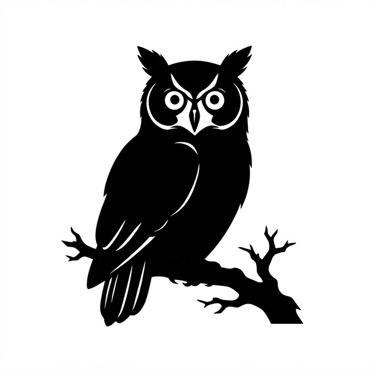

月花乱舞の札の絵を Gemini で作るための指示文。札ごとに「コピー」を押して、Gemini にそのまま送る。

画風の見本（偵察の札）。体はほぼ黒で塗りつぶし、白い彫りは目と羽の大きな切れ込みだけ。札は小さいので、細かい模様は潰れて見えなくなる。2枚目からも、同じチャットで続けて頼んでよい。
Gemini アプリで作った絵は、ゲームに使ってよい見込み。ただし法的な保証ではない。
2026年11月に調べた内容。出典：Google 利用規約・生成AIの禁止用途ポリシー・Gemini コミュニティの回答（Labs のツールについて）
コピーする文には、最初からこの決まりが入っている。